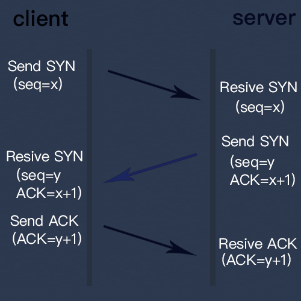

tcp3次握手
TCP是面向连接的通信协议，通过三次握手建立连接

步骤分解：
第一次握手：建立连接时，客户端发送syn包（seq=x）到服务器，并进入SYN_SENT状态，等待服务器确认；SYN：同步序列编号（Synchronize Sequence Numbers）。
第二次握手：服务器收到syn包，必须确认客户的SYN（ACK=x+1），同时自己也发送一个SYN包（seq=y），即seq+ACK包，此时服务器进入SYN_RECV状态；
第三次握手：客户端收到服务器的seq+ACK包，向服务器发送确认包ACK(ack=y+1），此包发送完毕，客户端和服务器进入ESTABLISHED（TCP连接成功）状态，完成三次握手。
为什么不是两次或者四次握手来建立连接？
不采用两次握手是为了防止失效的连接请求报文段突然又传送到server，产生错误，造成资源浪费
失效的连接请求报文段是指：客户端发出的连接请求没有收到服务端的确认，于是经过一段时间后，客户端又重新向服务端发送连接请求，且建立成功，顺序完成数据传输。考虑这样一种特殊情况，客户端第一次发送的连接请求并没有丢失，而是因为网络节点导致延迟达到服务端，服务端以为是客户端又发起的新连接，于是服务端同意连接，并向客户端发回确认，但是此时客户端根本不会理会，服务端就一直在等待客户端发送数据，导致服务端的资源浪费。
采用两次握手不行，原因就是上面说的失效的连接请求的特殊情况。而在三次握手中， client和server都有一个发syn和收ack的过程，双方都是发后能收，表明通信则准备工作OK。
为什么不是四次握手呢？
大家应该知道通信中著名的蓝军红军约定，这个例子说明，通信不可能100%可靠，三次握手已经做好了通信的准备工作，再增加握手，也不能显著提高可靠性，所以没有必要。